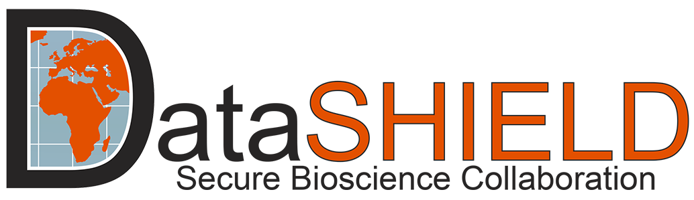
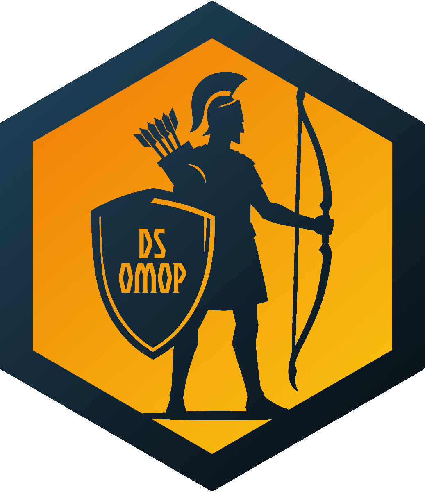

DataSHIELD APHRC Workshop
Combining DataSHIELD with OMOP CDM
Federated analysis with strong privacy guarantees on standardized clinical data.
This workshop introduces DataSHIELD for privacy-preserving federated analysis together with dsOMOP, its bridge to the Observational Medical Outcomes Partnership Common Data Model (OMOP CDM) used for standardized clinical databases.
Institutions behind this workshop
 
What is DataSHIELD?
DataSHIELD is an open-source platform that enables analysis of sensitive data without sharing individual-level records. Analyses are executed where the data reside; only vetted, non-disclosive summaries are returned. This privacy-by-design approach combines:
- Robust disclosure control on outputs
- Role-based governance and auditable workflows
- Secure, federated compute across institutions
This makes DataSHIELD ideal when regulations, ethics, or governance restrict data movement but collaborative analysis is essential.

DataSHIELD is also a community-driven, open-source initiative with contributors from universities, research institutes, and health systems. The community steers method development, governance rules, disclosure controls, and software evolution through open collaboration, ensuring transparency, interoperability, and best practices for secure multi-site analytics.
During our collaboration, we will be deploying the first African federated clinical data analysis network using DataSHIELD!
What are OHDSI and the OMOP CDM?
The OHDSI community maintains the OMOP Common Data Model (CDM), a widely adopted standard that harmonizes the structure and vocabularies of observational health data (EHRs, claims, registries). Standardization enables large-scale, reproducible analytics and consistency across diverse datasets.
OHDSI (Observational Health Data Sciences and Informatics) is a global, open-science collaborative that develops data standards, vocabularies, methods, and software for observational health research. OHDSI fosters reproducible research, open tools, and shared best practices to scale evidence generation across diverse data networks.

What is dsOMOP?
dsOMOP is a suite of packages that connects OMOP CDM databases to DataSHIELD. It streamlines access to standardized tables and vocabularies under DataSHIELD’s privacy model so you can:
- Discover and explore OMOP CDM content securely
- Build cohorts and run cross-site summary queries
- Perform federated, standardized analyses on harmonized clinical data

Federated standardized analysis
This combination of technologies enables powerful federated analysis with strong privacy guarantees:
- Privacy by design: Individual-level data never leave the hosting institution.
- Disclosure control: Automated safeguards prevent re-identification via output checks.
- Security and governance: Role-based access, auditability, and institutional control.
- Standardization: OMOP CDM ensures consistent structure and meaning across networks.
- Reproducibility: Shared code and common semantics for comparable results.
Workshop content
Block 1 — Working with DataSHIELD
- Connect to remote nodes and manage sessions
- Assign and aggregate safely without exposing rows
- Run common statistics under disclosure thresholds
- Understand privacy, security, and governance in practice
Block 2 — OMOP CDM via dsOMOP
- Connect to OMOP CDM databases through DataSHIELD
- Explore standardized tables and vocabularies
- Build cohorts and run summary queries across sites
- Perform federated, reproducible analyses on harmonized data